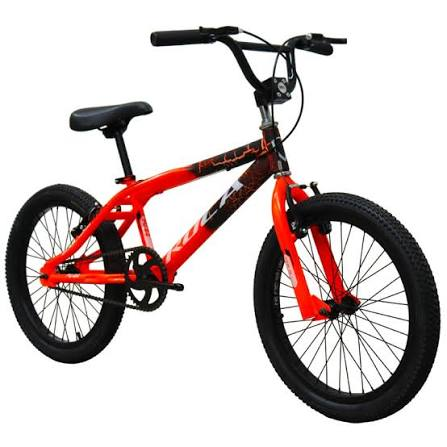
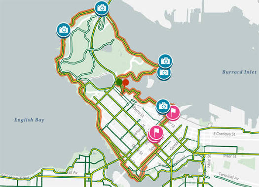

Alquiler de bicicletas

Alquila una bicicleta para recorrer Medellín a tu ritmo. Recuerda usar casco y asegurar la bicicleta con candado para disfrutar el paseo con mayor tranquilidad.
Ver tarifasAlquiler de bicicletas en Medellín. Explora la ciudad de manera sostenible y divertida.

Alquila una bicicleta para recorrer Medellín a tu ritmo. Recuerda usar casco y asegurar la bicicleta con candado para disfrutar el paseo con mayor tranquilidad.
Ver tarifas
Únete a nuestras rutas guiadas para descubrir los mejores lugares de Medellín. Es una forma divertida de conocer la ciudad sobre ruedas.
Contamos con un taller básico para el mantenimiento de tu bicicleta y asesoramiento técnico.